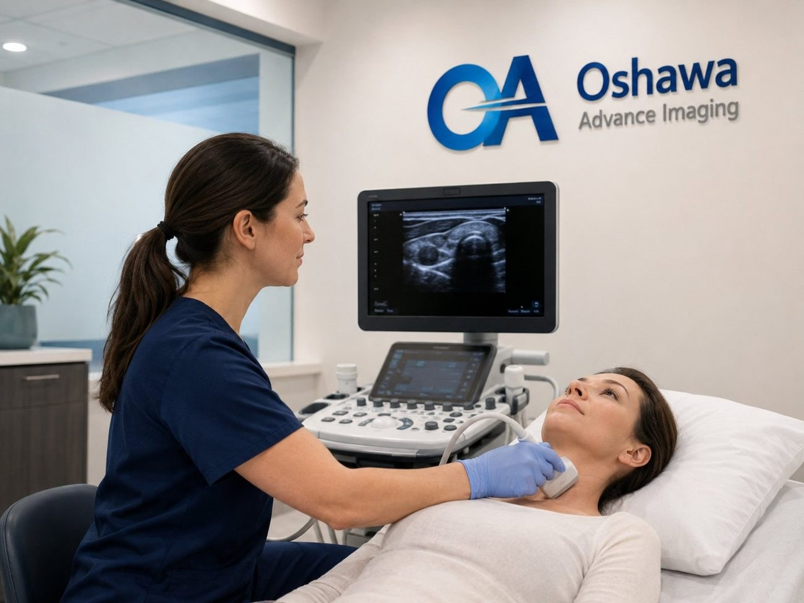
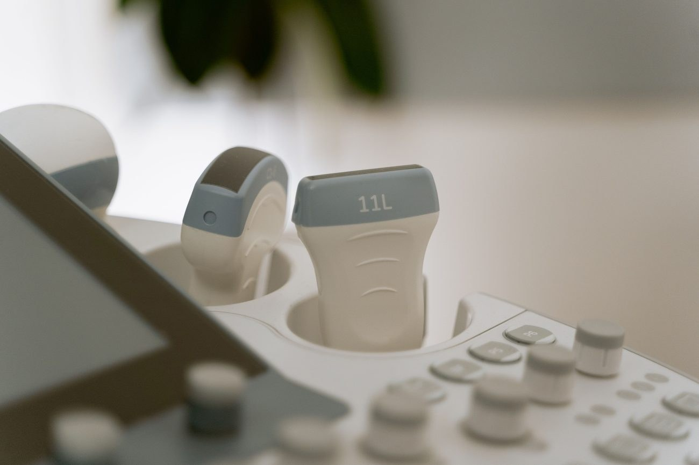
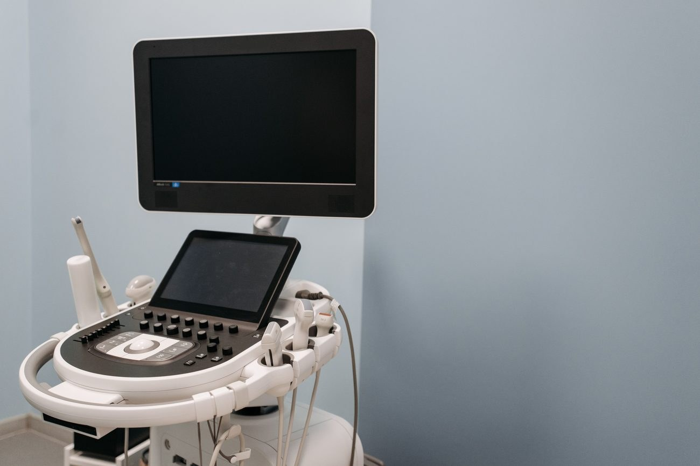

Safe, painless ultrasound imaging for many parts of the body, performed by experienced technologists and reported to your physician.

Ultrasound is a safe, painless imaging technique that uses sound waves to produce real-time images of the inside of the body.
At Oshawa Advance Imaging, we provide a wide range of diagnostic ultrasound examinations for patients and referring physicians across Durham Region. Ultrasound does not use ionising radiation, which makes it a versatile and widely used tool for assessing many parts of the body.
Your physician may request this imaging for a range of reasons, including:

Preparation depends on the type of ultrasound you are having. Common examples include:
When you arrive, please bring your valid health card and your physician's requisition. During the exam, a technologist applies a water-based gel to the skin and moves a small handheld probe over the area being imaged. The gel helps the probe capture clear images and wipes away easily afterward.
You may be asked to change position or hold your breath briefly so specific structures can be seen clearly. The exam is generally comfortable and non-invasive.

Your ultrasound images are reviewed and interpreted by qualified professionals. A report is then sent to your referring physician, who will discuss the findings with you and recommend any next steps. Clinic staff are not able to share or interpret results during your visit.
Ultrasound uses high-frequency sound waves rather than ionising radiation, and is widely considered safe for diagnostic imaging, including during pregnancy when requested by your physician.
Ultrasound is generally painless. A water-based gel is applied to the skin and a small handheld probe is moved over the area being examined.
Most ultrasound exams take between 20 and 45 minutes depending on the type of scan. We will give you an estimate when you book.
Some ultrasounds require preparation, such as fasting for an abdominal scan or a full bladder for a pelvic scan. Please confirm preparation instructions with the clinic when booking.
Findings are not discussed by clinic staff. Your images are interpreted by qualified professionals and a report is sent to your referring physician.
This website is for general information only and does not replace medical advice. Please speak with your physician or healthcare provider regarding your medical concerns. Imaging results are interpreted by qualified professionals and sent to your referring physician.